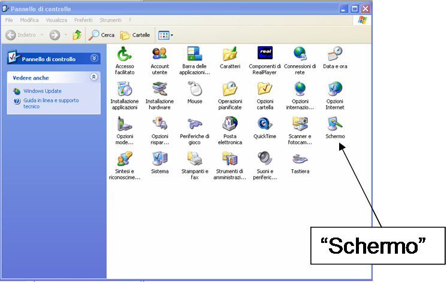
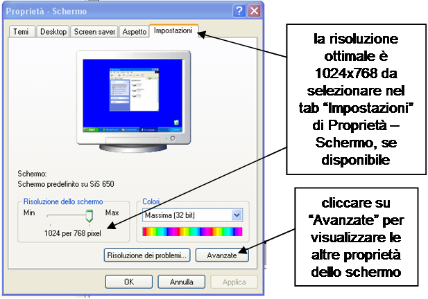
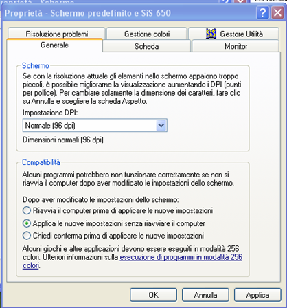

Come correggere l’impostazione DPI per visualizzare completamente ProFume Fumiguide
A seconda
delle impostazioni del Pannello di Controllo del software operativo Windows di Microsoft, il programma ProFume Fumiguide può essere visualizzato in diversi modi. Tali impostazione potranno essere regolate nel Pannello di Controllo di Windows seguendo i passaggi successivi.
Cliccate su Avvio, selezionate Impostazioni e quindi Pannello di Controllo.

Nel Pannello di Controllo, fate un doppio click sull’icona Schermo.

Quindi andate al tab Impostazioni in Proprietà dello Schermo. La risoluzione ottimale è 1024 x 768.

Nel caso la regolazione effettuata non dovesse permettere la completa visione di ProFume Fumiguide, si può perfezionare l’impostazione cliccando sul tasto Avanzate.
Se nel Tab Generale l’impostazione DPI dello schermo è regolata su "Grande", selezionate "Normale" per visualizzare il programma nella sua completezza.

Prestate attenzione all’opzione "Normale" nel menu a tendina Impostazione DPI. Questa opzione visualizzerà gli elementi in dimensione normale e consentirà una visione a pieno schermo del programma.
